Issue # 76 - July/August 1982
Although this spread appeared in MOTHER's Guide to (Almost!) Foolproof Gardening we figure that- with bug season here - we can all use a refresher course in knowing our enemy.
|
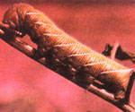 The TOMATO HORNWORM is a voracious garden pest, even though you'll usually find it munching only on tomato plants. |
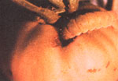 The TOMATO FRUITWORM - as you'd imagine - attacks the maturing fruits of tomato plants. |
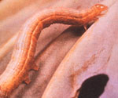 The CABBAGE LOOPER moves in a ""humping"" fashion, like an inchworm. These larvae prey upon the cabbage family and are usually found on the undersides of the leaves. |
|
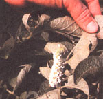 This TOMATO HORNWORM carries cocoons of the braconid wasp, which will hatch... and help protect your garden. |
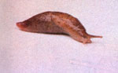 The SLUG, a general pest throughout the garden, will attack leaves and fruit. |
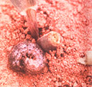 The BLACK CUTWORM can threaten the tender seedlings of many vegetables. |
|
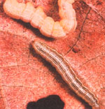 CABBAGE LOOPERS seen with damaged leaves. |
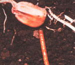 The WIREWORM attacks both root crops and the germinating seeds of young plants. |
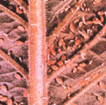 APHIDS (more often light in color than dark) can cause widespread crop damage. |
|
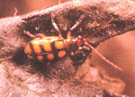 The BANDED CUCUMBER BEETLE preys on the same plants as the STRIPED CUCUMBER BEETLE. |
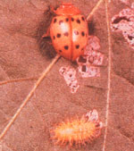 A MEXICAN BEAN BEETLE on a mutilated leaf. |
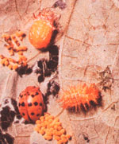 The life cycle of the MEXICAN BEAN BEETLE. |
|
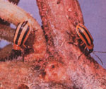 The STRIPED CUCUMBER BEETLE, depicted here with feeding damage, attacks cucumbers, melons, squash and pumpkins. |
|
|